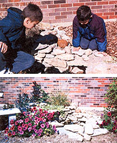
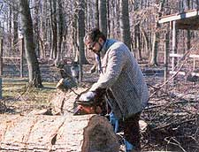

Happiness Is A Suburbian Homestead
Soccer mom finds that a family can go a long way toward self-sufficiency in an urban setting.
By Kimberly A. Reynolds
June/July 2002
Firsthand: Reports from the Field
by Kimberly A. Reynolds
I don't live on a farm or a remote mountainside-nowhere near the "boonies," as my mother calls the countryside. I am just another suburbanite with a half-acre plot and a brick ranch house in the middle of it. Our yard is modest, but we've found even on this small amount of land, a family can go a long way toward self-sufficiency.
Suburbs is a dirty word to some, but this is where I was born and raised. Although country living is fine for some folks, this also is a great life.
Our four children eat a lot, so it pays to have a garden. Our plot is approximately 20x40 feet. In this small area we grow enough corn and tomatoes to last all winter. I prefer to freeze my tomatoes, as it's easier than canning. I freeze corn in the husk. When we're ready to eat it, it comes out of the freezer and into the microwave. Nothing could be easier, and the taste is fresh-from-the-garden.
I also freeze zucchini (grated up for sweet bread), green peppers and hot peppers. I always put out several cucumber plants for pickle relish and bread-and-butter pickles. I can't find pickled beets in our local stores, so I plant and pickle those, too. We plant a few cabbages and some early lettuces, and that pretty well fills up our garden plot. It only takes one day for us to get our garden in, which is a small sacrifice considering the abundance it provides not only in food but in the sense of accomplishment as the harvest comes in. I never feel more connected to Mother Earth as I do when I'm in my garden.
Now the downside: weeding. Who wants to spend their valuable time on that? I've discovered a free and easy way to deweed the garden. As soon as I have my rows in, I lay down cardboard (free from the grocery store) and cover the pieces with grass clippings. If your mower doesn't have a bagger, ask a neighbor to drive over and dump their clippings in your garden. It's easier on them than trying to squish the clippings into a garbage bag. As the grass clippings break down, the garden gets a shot of nitrogen and other nutrients.
All our kitchen scraps, peels, egg shells, used paper napkins, etc., go into the compost pile. We keep our compost contained in a plastic drum with air holes in the sides and bottom, which allow worms, beneficial bugs and bacteria to move in and do their jobs and prevents our neighborhood dogs from viewing our compost pile as a buffet. After the scraps decompose, we spread the compost on the garden.
Any time I pass a new construction site, look out, here I come to haul away rocks. My oldest son swears he's going to get a hernia one of these days, but I tell him a little hard work never hurt anyone.
It's amazing how little trash we have to set out on trash day since we're recycling most of it in our own yard. Maybe I'm simple, but this really makes me feel good.
The ultimate exercise in recycling comes in shopping at garage and yard sales. I wonder how many things would end up in the landfill if yard-sale shoppers didn't save them. Plus, getting a $40 shirt for 50 cents is great. We use the money saved to travel and see our Mother Earth firsthand.
We're always looking for our favorite two words, free and cheap, for our home improvement and garden projects. We're lucky to have a friend in the construction cleanup business who's able to snag many items his crew is ready to pitch. We've gotten doors, bathroom cabinets, trim, wood, sinks, etc.-just by asking. Of course, these are scratch-and-dent, but we don't care: If it's free, it's for me. Using these less-than-perfect things also helps reduce the landfill. If you're willing to look, many of these items are in construction-site trash bins free for the asking.
I'm fond of my flower gardens and like the natural look in my landscaping. We use free-flowing curves for a beautiful look as well as ease of mowing. (My husband demands this!) I like using rocks in the garden: We place them in the beds, use them to decorate walls and rock-scapes and make paths. If you haven't figured it out by now, I've found a free source for rocks. Any time I pass a construction site, look out, here I come to haul away rocks. My oldest son swears he's going to get a hernia one of these days, but I tell him a little work never hurt anyone.
Even I have toughened up a bit. Cutting and hauling firewood is hard work, folks. But hey! Are any of you out there paying for exercise classes? Save your money and get some exercise that will pay you. Our fireplace insert helps reduce our heating bills, especially since we've always been able to get all the firewood we need-absolutely free-if we'll cut it and take it away.
When I first considered quitting my job and staying home, I was afraid we wouldn't have enough money. Now we're actually doing better because I have time for moneysaving projects.
Our Earth-friendly measures have saved us a lot financially, but even more importantly, they remind us how each act affects the circle of life. I've found that living lightly on our planet doesn't have much to do with where you live but with how you live. Everything we do requires a decision. We've decided while we're here we must respect and protect the Earth, not just for our children, but for their children and on down the line. It doesn't take much: a few extra hours a week, a little more planning, some creativity. We all can do our part wherever we are. And if each of us, wherever we live and whatever we do, will love our Mother, how wonderful this planet will be for her future inhabitants.
 Left: Kim stacks firewood that was ""free for the taking."" Center: Brian Reynolds with the three younger children. Above: Blaine, now 8, knows his work is valuable to the family. |
 Scrounging rocks from construction sites provided the material for a fish pond, made with a plastic wading pool. |
 Brian cuts fuel for the efficient fireplace. |